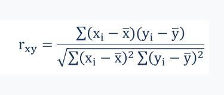

Coorelation
Description / Statistical Method / Coorelation
A correlation is a statistical measure of the relationship between two variables. The measure is best used in variables that demonstrate a linear relationship between each other. The fit of the data can be visually represented in a scatterplot. Using a scatterplot, we can generally assess the relationship between the variables and determine whether they are correlated or not.
The correlation coefficient is a value that indicates the strength of the relationship between variables. The coefficient can take any values from -1 to 1. The interpretations of the values are:
- -1: Perfect negative correlation. The variables tend to move in opposite directions (i.e., when one variable increases, the other variable decreases).
- 0: No correlation. The variables do not have a relationship with each other.
- 1: Perfect positive correlation. The variables tend to move in the same direction (i.e., when one variable increases, the other variable also increases).
One of the primary applications of the concept in finance is in portfolio management. A thorough understanding of this statistical concept is essential to successful portfolio optimization.
Correlation and Causation
Correlation must not be confused with causality. The famous expression “correlation does not mean causation” is crucial to the understanding of the two statistical concepts.
If two variables are correlated, it does not imply that one variable causes the changes in another variable. Correlation only assesses relationships between variables, and there may be different factors that lead to the relationships. Causation may be a reason for the correlation, but it is not the only possible explanation.
How to Find the Correlation?
The correlation coefficient that indicates the strength of the relationship between two variables can be found using the following formula:

Where:
- rxy – the correlation coefficient of the linear relationship between the variables x and y
- xi – the values of the x-variable in a sample
- x̅ – the mean of the values of the x-variable
- yi – the values of the y-variable in a sample
- ȳ – the mean of the values of the y-variable
In order to calculate the correlation coefficient using the formula above, you must undertake the following steps:
- Obtain a data sample with the values of x-variable and y-variable.
- Calculate the means (averages) x̅ for the x-variable and ȳ for the y-variable.
- For the x-variable, subtract the mean from each value of the x-variable (let’s call this new variable “a”). Do the same for the y-variable (let’s call this variable “b”).
- Multiply each a-value by the corresponding b-value and find the sum of these multiplications (the final value is the numerator in the formula).
- Square each a-value and calculate the sum of the result
- Find the square root of the value obtained in the previous step (this is the denominator in the formula).
- Divide the value obtained in step 4 by the value obtained in step 7.
You can see that the manual calculation of the correlation coefficient is an extremely tedious process, especially if the data sample is large. However, there are many software tools that can help you save time when calculating the coefficient. The CORREL function in Excel is one of the easiest ways to quickly calculate the correlation between two variables for a large data set.